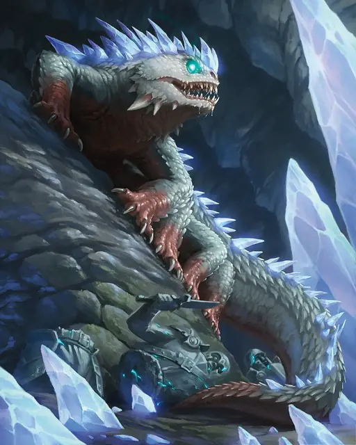

Василиск
Basilisk
Среднее Чудовище, без мировоззрения

Класс Защиты 15 Инициатива −1 (9)
Хиты 52 (8к8 + 16)
Скорость 20 футов
| мод | спас | ||
|---|---|---|---|
| СИЛ | 16 | +3 | +3 |
| ЛОВ | 8 | −1 | −1 |
| ТЕЛ | 15 | +2 | +2 |
| мод | спас | ||
|---|---|---|---|
| ИНТ | 2 | −4 | −4 |
| МДР | 8 | −1 | −1 |
| ХАР | 7 | −2 | −2 |
Чувства Тёмное зрение 60 футов, пассивное Восприятие 9
Языки нет
Опасность 3 (700 опыта; БВ +2)
Действия
Укус. Бросок рукопашной атаки: +5, досягаемость 5 фт. Попадание: 10 (2к6 + 3) Колющего урона плюс 7 (2к6) урона Ядом.
Бонусные действия
Окаменяющий взгляд (Перезарядка 4–6). Спасбросок Телосложения: Сл 12, каждое существо в 30-футовом Конусе. Если василиск видит своё отражение в этом Конусе, он должен совершить данный спасбросок. Первый провал: Цель становится Опутанной и повторяет спасбросок в конце каждого своего хода, если она всё ещё Опутана, оканчивая этот эффект при успехе. Второй провал: Цель перестаёт быть Опутанной и становится Окаменевшей.
Бонус мастерства +2
Среда обитания Горы, Подземье
Сокровища Любые
Василиск
Сторожевая рептилия с тяжёлым взглядом
Василиски — массивные хищники с восемью когтистыми лапами, кристаллическими шипами и мощными челюстями. Вместо преследования добычи они используют свой сверхъестественный взгляд, чтобы обращать существ в камень, а затем неспешно поедают их. Василиски обитают в подходящих для них подземных логовах, однако многие попадают в плен к беспринципным существам, которые ищут стражей для своих сокровищ.
На территориях, где охотятся василиски, можно обнаружить многочисленные останки окаменевших существ — его жертв. Среди них — множество совершенно разных созданий, которым не повезло встретиться с этим ужасным пресмыкающимся.
Совершите бросок по таблице «Окаменевшая жертва василиска» для вдохновения или выберите сами описание статуи в охотничьих угодьях василиска. Существует 50‑процентный шанс, что любая из этих скульптур разбита на осколки или потеряла конечности.
Окаменевшая жертва василиска
| 1к8 | Взгляд василиска превратил в статую… |
| 1 | Искателя приключений, на шее которого висит изящный ключ. |
| 2 | Животное (например, летучую мышь, медведя, оленя или козу). |
| 3 | Цепляющегося за сталактит альпиниста. |
| 4 | Его самого, отразившись в большом зеркале или блестящей поверхности. |
| 5 | Замаскированного под сундук с сокровищами мимика. |
| 6 | Чудовище (например, бурого увальня или троглодита). |
| 7 | Персонажа, застывшего в комической позе или с грустным лицом. |
| 8 | Жертву, ставшую гнездом для колонии насекомых или других паразитов. |